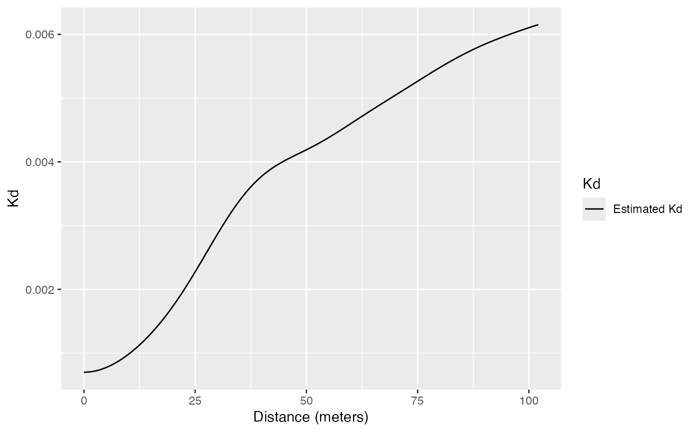
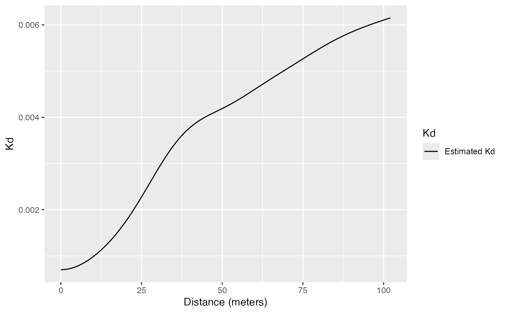

Estimation of the Kd function
Kdhat.RdEstimates the Kd function
Usage
Kdhat(X, r = NULL, ReferenceType, NeighborType = ReferenceType, Weighted = FALSE,
Original = TRUE, Approximate = ifelse(X$n < 10000, 0, 1), Adjust = 1,
MaxRange = "ThirdW", StartFromMinR = FALSE, CheckArguments = TRUE)Arguments
- X
A weighted, marked planar point pattern (
wmppp.object) or aDtableobject.- r
A vector of distances. If
NULL, a default value is set: 512 equally spaced values are used, from the smallest distance between points to half the diameter of the window.- ReferenceType
One of the point types. If "", all points are considered (this is not the default value;
NeighborTypeis ignored then) to estimate the average value of simulated Kd values under the null hypothesis of RandomLocation (Marcon and Puech, 2012).- NeighborType
One of the point types. By default, the same as reference type.
- Weighted
Logical; if
TRUE, estimates the Kemp function.- Original
Logical; if
TRUE(by default), the original bandwidth selection by Duranton and Overman (2005) following Silverman (1986: eq 3.31) is used. IfFALSE, it is calculated following Sheather and Jones (1991), i.e. the state of the art. Seebw.SJfor more details.- Approximate
if not 0 (1 is a good choice), exact distances between pairs of points are rounded to 1024 times
Approximatesingle values equally spaced between 0 and the largest distance. This technique (Scholl and Brenner, 2015) allows saving a lot of memory when addressing large point sets (the default value is 1 over 10000 points). IncreasingApproximateallows better precision at the cost of proportional memory use. Ignored ifXis aDtableobject.- Adjust
Force the automatically selected bandwidth (following
Original) to be multiplied byAdjust. Setting it to values lower than one (1/2 for example) will sharpen the estimation.- MaxRange
The maximum value of
rto consider, ignored ifris notNULL. Default is "ThirdW", one third of the diameter of the window. Other choices are "HalfW", and "QuarterW" and "D02005". "HalfW", and "QuarterW" are for half or the quarter of the diameter of the window. "D02005" is for the median distance observed between points, following Duranton and Overman (2005). "ThirdW" should be close to "DO2005" but has the advantage to be independent of the point types chosen asReferenceTypeandNeighborType, to simplify comparisons between different types. "D02005" is approximated by "ThirdW" ifApproximateis not 0. ifXis aDtableobject, the diameter of the window is taken as the max distance between points.- StartFromMinR
Logical; if
TRUE, points are assumed to be further from each other than the minimum observed distance, So Kd will not be estimated below it: it is assumed to be 0. IfFALSE, distances are smoothed down to \(r=0\). Ignored ifApproximateis not 0: then, estimation always starts from \(r=0\).- CheckArguments
Logical; if
TRUE, the function arguments are verified. Should be set toFALSEto save time in simulations for example, when the arguments have been checked elsewhere.
Details
Kd is a density, absolute measure of a point pattern structure. Kd is computed efficiently by building a matrix of distances between point pairs and calculating the density of their distribution (the default values of r are those of the density function). The kernel estimator is Gaussian.
The weighted Kd function has been named Kemp (emp is for employees) by Duranton and Overman (2005).
If X is not a Dtable object, the maximum value of r is obtained from the geometry of the window rather than caculating the median distance between points as suggested by Duranton and Overman (2005) to save (a lot of) calculation time.
Note
Estimating Kd relies on calculating distances, exactly or approximately (if Approximate is not 0).
Then distances are smoothed by estimating their probability density.
Reflection is used to estimate density close to the lowest distance, that is the minimum observed distance (if StartFromMinR is TRUE) or 0: all distances below 4 times the estimation kernel bandwith apart from the lowest distance are duplicated (symmetrically with respect to the lowest distance) to avoid edge effects (underestimation of the density close to the lowest distance).
Density estimation heavily relies on the bandwith.
Starting from version 2.7, the optimal bandwith is computed from the distribution of distances between pairs of points up to twice the maximum distance considered.
The consequence is that choosing a smaller range of distances in argument r results in less smoothed \(Kd\) values.
The default values (r = NULL, MaxRange = "ThirdW") are such that almost all the pairs of points (except those more than 2/3 of the window diameter apart) are taken into account to determine the bandwith.
References
Duranton, G. and Overman, H. G. (2005). Testing for Localisation Using Micro-Geographic Data. Review of Economic Studies 72(4): 1077-1106.
Marcon, E. and F. Puech (2017). A typology of distance-based measures of spatial concentration. Regional Science and Urban Economics. 62:56-67.
Scholl, T. and Brenner, T. (2015) Optimizing distance-based methods for large data sets, Journal of Geographical Systems 17(4): 333-351.
Sheather, S. J. and Jones, M. C. (1991) A reliable data-based bandwidth selection method for kernel density estimation. Journal of the Royal Statistical Society series B, 53, 683-690.
Silverman, B. W. (1986). Density estimation for statistics and data analysis. Chapman and Hall, London.
Examples
data(paracou16)
autoplot(paracou16)
 # Calculate Kd
(Paracou <- Kdhat(paracou16, , "Q. Rosea", "V. Americana"))
#> Function value object (class ‘fv’)
#> for the function r -> Kd(r)
#> .................................
#> Math.label Description
#> r r distance argument r
#> Kd hat(Kd)(r) Estimated Kd(r)
#> .................................
#> Default plot formula: .~r
#> where “.” stands for ‘Kd’
#> Recommended range of argument r: [0, 102.11]
#> Available range of argument r: [0, 102.11]
#> Unit of length: 1 meter
# Plot
autoplot(Paracou)

# Calculate Kd
(Paracou <- Kdhat(paracou16, , "Q. Rosea", "V. Americana"))
#> Function value object (class ‘fv’)
#> for the function r -> Kd(r)
#> .................................
#> Math.label Description
#> r r distance argument r
#> Kd hat(Kd)(r) Estimated Kd(r)
#> .................................
#> Default plot formula: .~r
#> where “.” stands for ‘Kd’
#> Recommended range of argument r: [0, 102.11]
#> Available range of argument r: [0, 102.11]
#> Unit of length: 1 meter
# Plot
autoplot(Paracou)
